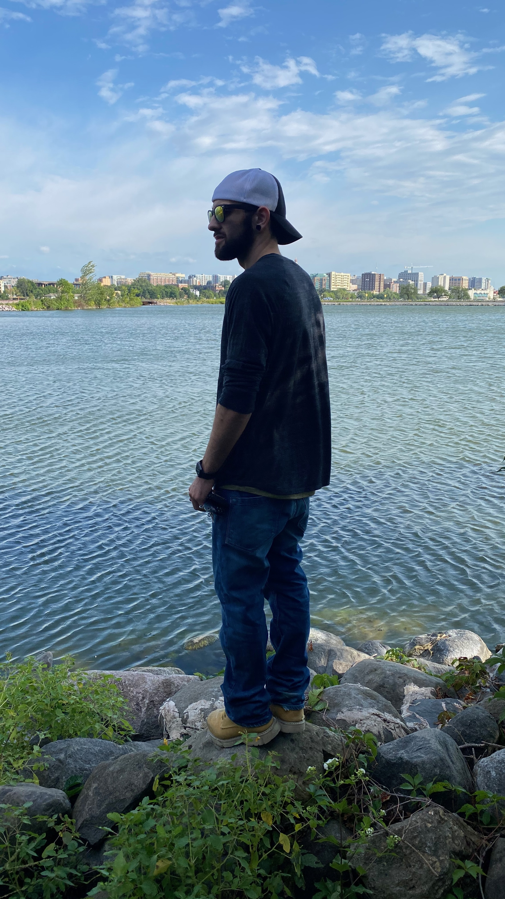

About David
David has a great sense of adventure but also never forgets where he came from. His family is very important to him and holds his loved ones close to his heart. He has a small circle but it is close knit. David was raised Buddhist and while he may not practice Buddhism currently, he still has the same outlook as many Buddhist and he is very self-aware and grateful for what he has. He may not have a whole lot, but he enjoys what he has and knows that having more things does not mean having happiness.

"